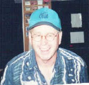
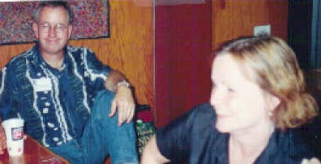

BHS 1967 Class Member
Mark J. Campbell
Click to Email
Click to Email
 1967 |
2022 |
|  2002 |
 Mark and Rhoda |
| 1967 |
2022 |
|  2002 |
 Mark and Rhoda |
Update 2014:
Taken from Mo Kelley's Kelley's Korner:
After leaving Boone, he worked for 31 1/2 years for the Iowa Department of Public Safety in Fairfield, Cedar Rapids and Des Moines. He said he actually retired a while ago from his state job but works as a book shelver at Iowa's busiest library, the Franklin Avenue Library. He's been married 35 years, has three kids and six grandchildren. Mark's dad, a former United Community staffmember, passed away in 1993, his mother lives in Des Moines, his sister in Kansas City and his brother in Riyadh, Saudi Arabia as a member of the diplomatic corps.
Update 2012:
Des Moines IA 50310
Occupation: Retired - Civilian Employee of Iowa Department of Public Safety
Spouse Name: Rhoda, Retired Counselor
Children: (Name & Age): Zac-39, Abbie-31, Seth-28
Grandchildren: 2 of each
KWBG-radio employee through 1972. Iowa Police Radio-1973-1987, Field
Services trainer 1987-1989, Governor’s Traffic Safety Bureau, 1989-present.
Married in 1978.